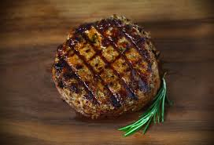

Hamburger

Description
A patty or burger (in British English) is a flattened, usually round, serving of ground meat and/or legumes, grains, vegetables, or meat alternatives. Patties are found in multiple cuisines throughout the world.
Ingredients
- Defrosted burger ready to cook
- Salt
- Black pepper
- Ariosto spice (optional)
- Egg (optional)
Steps
- Heat a grill and sprinkle with salt
- Put the burger/s on the grill
- Sprinkle with salt and spice of your choice
- Check the cooking on the bottom and flip if you see burnt lines
- Repeat the last step 2 more times